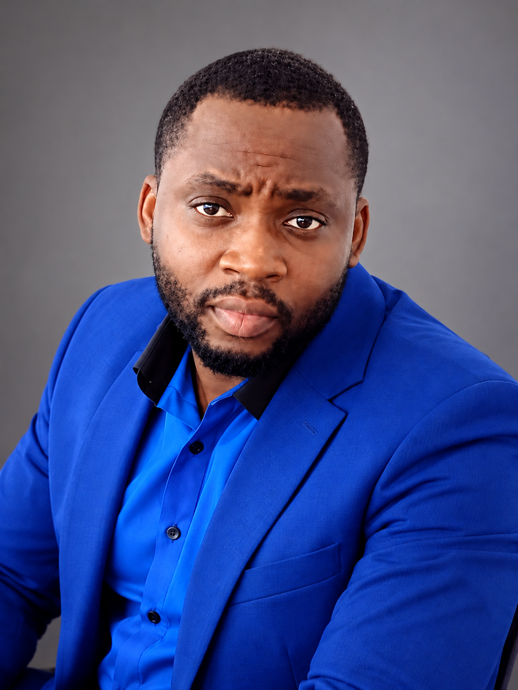

Our Mission
To help people and organisations move forward through practical business, data and technology solutions.
THE PEOPLE · THE PURPOSE · THE VISION
Discover the people, values and vision behind GODZYA GROUP — where practical experience meets the ambition to create meaningful progress.
OUR STORY
GODZYA GROUP was founded on a belief that knowledge, innovation and determination can create meaningful opportunities.
We bring together experience in customer relationships, communication, business operations and emerging digital solutions to support individuals and organisations.
Our approach is grounded in continuous learning, practical thinking and the conviction that progress should be accessible.
WHAT GUIDES US
To help people and organisations move forward through practical business, data and technology solutions.
To build a trusted company that connects experience, innovation and opportunity beyond borders.
Integrity, lifelong learning, collaboration, accountability and purposeful innovation.
THE PEOPLE BEHIND GODZYA

“Life is a continuous journey of learning. Education gives us knowledge, experience gives us wisdom, and perseverance gives us the strength to turn our dreams into reality.”
Dei Bouya is an entrepreneur and the Founder and Chief Executive Officer of GODZYA GROUP, a company built on the belief that knowledge, innovation and determination can create meaningful opportunities.
With more than a decade of professional experience in customer service and international business environments, Dei brings a strong understanding of communication, customer relationships, problem-solving and operational excellence.
His professional journey reflects a commitment to continuous education, personal development and adaptability. He believes that learning should never stop, regardless of age, background or circumstances.
Driven by curiosity and a passion for technology, business development and digital innovation, Dei established GODZYA GROUP with a vision of helping individuals and organisations embrace opportunities through practical, modern solutions.
For him, success is not simply measured by achievements, but by the knowledge gained, the challenges overcome and the positive impact created along the way.
Learn continuously. Lead with purpose. Build with integrity. Grow beyond limitations.
“I believe that where we begin in life does not determine how far we can go. Every challenge teaches us something, every experience shapes our character, and every opportunity to learn brings us closer to the future we want to create. My ambition is not only to build a successful company, but to create something meaningful that inspires others to believe in their potential.”
Dei Bouya
Founder & CEO — GODZYA GROUP
Part of the leadership team behind GODZYA GROUP, supporting the company's direction and operations.
Connect with GODZYALET'S BUILD TOGETHER
Have a project, a question or an opportunity to collaborate? We'd love to hear from you.
Visit GODZYA CONNECT